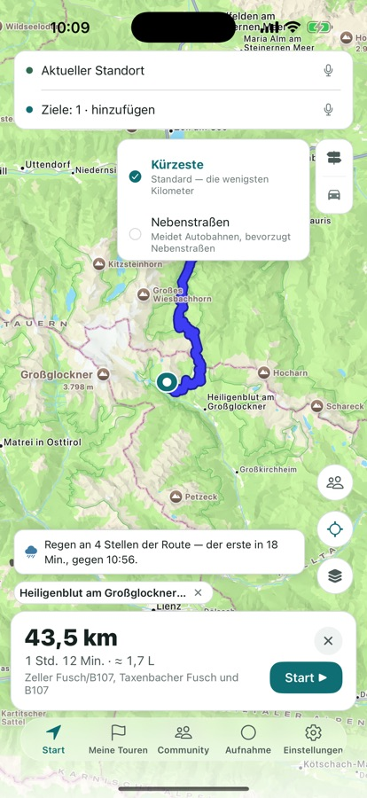
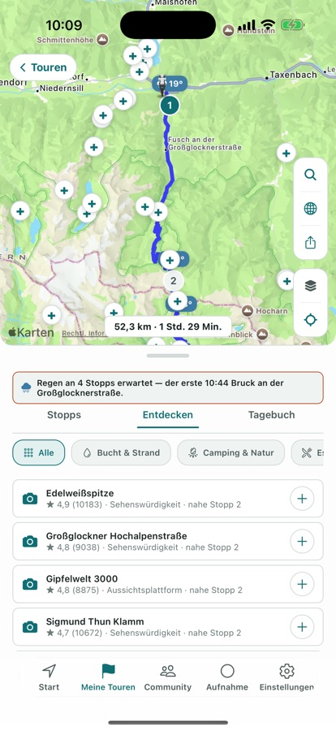
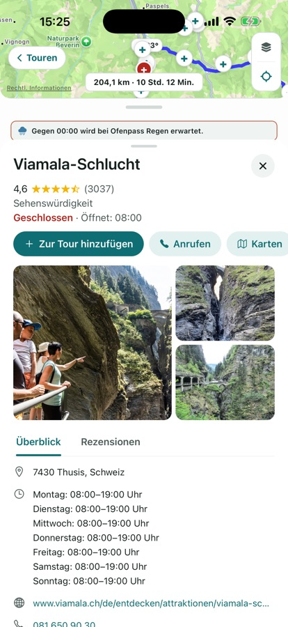
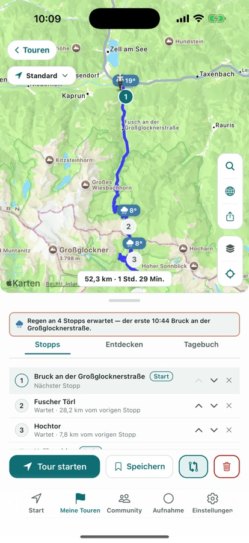
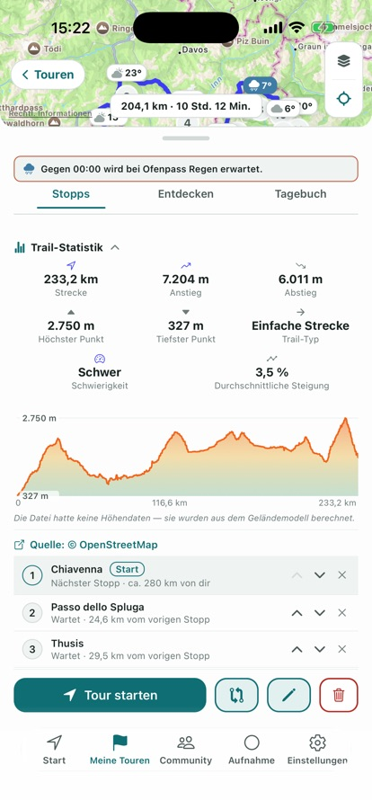
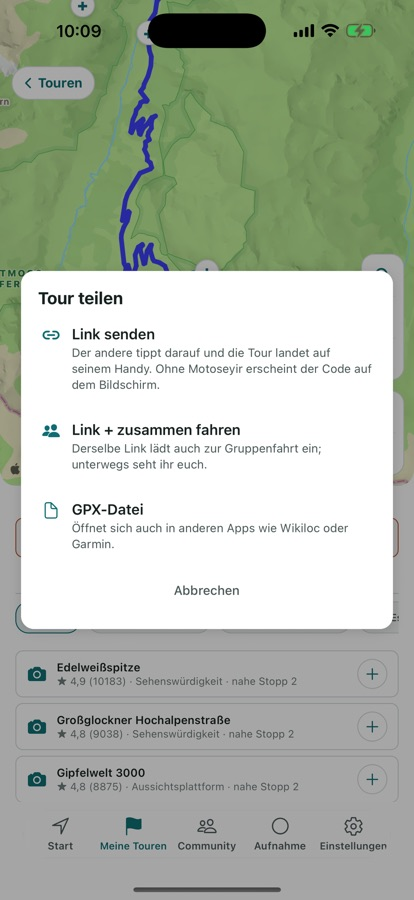

Alle Funktionen von Motoseyir
Diese Seite wächst. Kommt eine neue Funktion, steht sie zuerst hier, unter der passenden Überschrift. Unten gibt es vier Gruppen: Stadt und Kurier, Touren, unterwegs und nach der Fahrt, gemeinsam fahren.
Für die Stadt und für Kuriere
Kürzeste Route
Ein normales Navi gibt dir den schnellsten Weg für ein Auto. Auf dem Motorrad ermüden dich keine Minuten, sondern Kilometer. Motoseyir vergleicht zwischen denselben zwei Punkten mehrere Varianten und schlägt die kürzeste vor, auch wenn sie etwas länger dauert. Die Navigation Schritt für Schritt bringt eine nah mitlaufende Karte, Abbiegehinweise, Restdistanz und Ankunftszeit.

Beste Reihenfolge der Stopps
Du markierst mehrere Lieferpunkte in beliebiger Reihenfolge, „Beste Reihenfolge“ sortiert alle nach der kürzesten Gesamtstrecke neu. Über der Route steht auch, wann du an jedem Stopp bist. Die zwei Screens unten sind aus einer echten Fahrt: dieselben vier Stopps in Istanbul, in eigener Reihenfolge 57,1 km, in der von Motoseyir gefundenen 46,9 km. Der Unterschied sind über zehn Kilometer.


Spritkosten
Die geschätzten Spritkosten der Route siehst du, bevor du losfährst — gerechnet in der Einheit deines Landes: Liter pro 100 km in Europa, Gallonen und mpg in den USA, mit lokalen Preisen. Verbrauch und Preis gibst du unter Einstellungen → Fahren ein; der Sparbericht rechnet mit diesen zwei Werten.
Für Touren und Wochenendfahrten
Nebenstraßen-, Küsten- und Enduro-Modus
Im Nebenstraßenmodus wird die Route auf Motoseyirs eigenem Server berechnet, der die Talverbindungen und asphaltierten kleinen Straßen nutzt, die eine normale Karte auslässt. Von Ayder nach Hemşin werden so 24,1 km daraus; allgemeine Karten zeigen für dieselben zwei Punkte 49,9 km. Der Küstenmodus hält die Route mit demselben Server an der Küste, der Enduro-Trail-Modus sucht Schotter und Feldwege. Den Modus wechselst du oben links im Tour-Bildschirm.

Legendäre Routen, fertig zum Fahren
Aus den Alpen: Großglockner Hochalpenstraße, Stilfser Joch, Furka–Grimsel–Susten, Sellaronda, Timmelsjoch, Col du Galibier. Aus der Türkei: Şile–Ağva, die lykische D400, Assos–Kaz-Gebirge, Nemrut, Sapanca–Maşukiye–Kartepe. Und sieben amerikanische Klassiker: Tail of the Dragon, Cherohala Skyway, Blue Ridge Parkway, Beartooth Highway, Angeles Crest, Big Sur, Million Dollar Highway. Öffnest du eine, wird sie mit Stopps und Route in deine eigenen Touren kopiert.

Entdecken
Die App listet Buchten, Campingplätze und Einkehrmöglichkeiten rund um deine Route. Du siehst Bewertung und Abstand zur Route und fügst das, was dir gefällt, als Stopp hinzu. Tippst du auf einen Ort, stehen Lage, Bewertung und eine kurze Info auf einem Bildschirm.


Tourtagebuch
Du baust die Tour aus Stopps; kommst du an einem an, wird er von selbst ins Tagebuch eingetragen, und du machst ein Foto und schreibst eine kurze Notiz. Pro Stopp sind bis zu drei Fotos möglich, und die Fotos erscheinen als Karten auf der Tourkarte. Auch wenn du die Tour von vorn beginnst, bleiben sie erhalten. Das Tagebuch bleibt auf dem Gerät; teilst du es in der Community, gehen höchstens drei Fotos mit — und du wählst, welche.

Trails und GPX
Importierst du eine GPX-Datei, landet der Track im Tab „Trail“; eine Tour aus dem Code eines Freundes im Tab „Touren“. Solange der Trail-Tab leer ist, erklärt er, wofür er da ist, und bietet einen fertigen Beispiel-Trail für deine Region. Auch eine eigene Fahrtaufzeichnung lässt sich in einen Trail verwandeln und als GPX exportieren.
Unterwegs und nach der Fahrt
Regenwarnung entlang der Route
Wird auf deiner Route Regen erwartet, warnt die App vorher für die Zeit, zu der du wirklich dort bist — für jeden Stopp einzeln. Bleibt es trocken, erscheint gar nichts.

Fahrtaufzeichnung und Trail-Statistiken
Die Aufzeichnung läuft auch bei ausgeschaltetem Display weiter und der Track färbt sich nach Geschwindigkeit; Pausenzeit wird getrennt gezählt, lange Pausen schließen einen Abschnitt von selbst. Unterwegs startest du die Aufzeichnung mit der Taste in der Navigation und beendest sie mit derselben Taste. Eine beendete Fahrt kannst du deiner Gruppe schicken, in einen Trail verwandeln oder als GPX exportieren. Für einen Trail rechnet die App Distanz, Gesamtanstieg und steilste Rampe aus, und fährst du mit dem Finger über das Höhenprofil, wandert der Punkt auf der Karte mit. Fehlen in der Datei Höhendaten, kommen sie aus einem Geländemodell.

Sprachführung
Die Abbiegehinweise spricht die Stimme deines Telefons in der Sprache der App; steht die App auf Türkisch, kommen sie von einer echten, aufgenommenen Stimme — im letzten Update neu aufgenommen. Die Distanz folgt deiner Region: Kilometer in Europa, Meilen und Fuß in den USA („In 500 Fuß rechts abbiegen“), Meilen und Yards in Großbritannien.
Telefon quer drehen
Hältst du das Telefon quer, sammeln sich Karten und Listen links, und die Karte nimmt den Rest. In der Navigation stehen das Abbiegeband und die Ankunftskarte links, die Karte rechts; Meine Touren wechselt auf zwei Spalten. In den breiten Haltern über dem Tank sitzt dieses Layout einfach besser.
Gemeinsam fahren
Gruppenfahrt
Erstellt jemand eine Gruppe, entsteht ein einziger Code (zum Beispiel A3K9MZ7P); alle treten mit diesem Code bei und sehen sich gegenseitig auf der Route. Der Standort wird nur geteilt, solange eine Fahrtaufzeichnung oder die Navigation läuft, und nach der Fahrt vom Server gelöscht. Beitreten ist gratis, eine Gruppe erstellen braucht Pro. Öffnet ein Mitglied eine Route mit „Start“, geht dieselbe Route an die anderen, die sie mit einem Tipp auf dem eigenen Bildschirm öffnen.
Das Gruppenpanel wurde im letzten Update einfacher: Code oben, Personen zuerst, Einstellungen unten. Die Gruppentaste zeigt, wenn Teilen aktiv ist, und ein zur Route hinzugefügter Stopp ist auf der Karte markiert.

Zur Fahrt einladen
In „Meine Fahrgruppe“ schickt „Zur Fahrt einladen“ neben einer Person Route und Sprachverbindung mit einem Tipp. Wer sie bekommt, wählt „Dieselbe Route fahren“ und öffnet dieselbe Route auf dem eigenen Telefon — oder „Ich fahre hinter dir“ und hängt sich nur an den Ton. Keine Codes eintippen, keine Screens teilen.
Intercom über das Internet
Während eine Gruppenroute gefahren wird, fragt das Intercom einmal; nimmst du an, geht der Ton nur an deine Gruppe. Ohne Route lässt es sich auch von Hand starten. Ein Tipp auf die Intercom-Pille in der Navigation schaltet dein eigenes Mikrofon stumm; die Lautsprecher-Taste in der Mitgliederliste schaltet einen Fahrer nur für dich stumm, die übrige Gruppe hört ihn weiter. Verbinde Helm oder Headset über Bluetooth, dann kommt der Ton darüber. Auf unserem Server wird nichts aufgezeichnet, der Ton geht nur an die, die gerade im Raum sind; der Raum schließt sich, wenn die Navigation endet oder du ihn selbst schließt.
Fahrtaufzeichnungen in der Gruppe und der Community-Feed
Schickst du eine beendete Fahrt an deine Gruppe, bleiben Strecke, Distanz und Zeit dort 14 Tage; rund 400 Meter um Start und Ziel werden gar nicht gesendet. Eine gesendete Aufzeichnung holst du jederzeit zurück. Der Community-Feed ist dagegen öffentlich: eine geteilte Tour erscheint mit Name, Stopps, Distanz, Zeit und deiner Notiz und lässt sich liken und kommentieren. Beiträge werden vor der Veröffentlichung geprüft, den Feed kannst du nach Ländern filtern, und du kannst einen Beitrag, einen Kommentar oder deine Mitgliedschaft jederzeit entfernen.
Bald: AI CoRider — ein Beifahrer, mit dem du im Helm sprichst. In der App-Store-Version noch nicht enthalten; er kommt mit einem späteren Update in Pro.